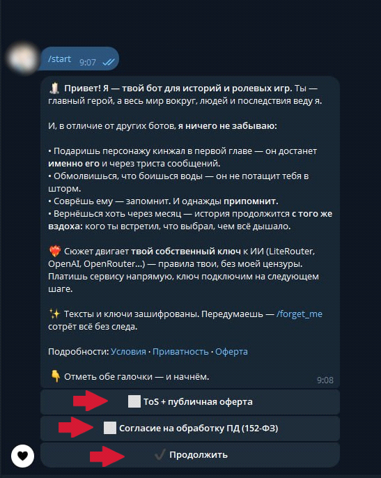
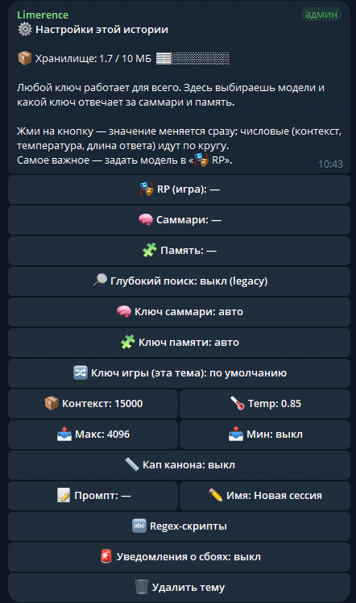

Что это за бот и быстрый старт
RP-бот с памятью, карточками персонажей, лором и поддержкой пресетов SillyTavern. Пять шагов — и ты в игре.
Шаг 1 — Запуск и согласие
Открой @Limerence_Stories_bot в личке (DM) и напиши /start. Бот покажет банер — поставь обе галочки:
- Условия использования (ToS) + оферта
- Согласие на обработку персональных данных
Без этих галочек бот по закону ничего не делает. После согласия открывается 7-дневный пробный период (полный доступ бесплатно) — отсчёт начинается не сразу, а с твоего первого сообщения в Теме, так что на настройку пробные дни не тратятся. Бот сразу называет точную дату окончания и сам напомнит за день до и в день окончания. Продлить в любой момент — команда /premium.
Шаг 2 — Группа с Темами
Каждая история живёт в отдельной «Теме» внутри твоей приватной группы Telegram.
- Создай приватную группу — название любое.
- В настройках группы включи «Темы» (Topics / Forum).
- Добавь бота @Limerence_Stories_bot и сделай его администратором (базовых прав хватает: читать, отправлять, управлять темами).
- Создай первую Тему — назови как угодно («Ведьмак», «Аня и Кэйн»).
Шаг 3 — Подключи ключ провайдера
В Теме введи /api → «➕ Добавить нового» — бот пришлёт кнопку и перенесёт мастер в личку (три вопроса: URL, имя, ключ). Подробно — в разделе 2.
Шаг 4 — Выбери модель
В Теме введи /settings → «🎭 RP (игра)» → впиши имя модели. Подробно — в разделе 4.
Шаг 5 — Пиши в Тему
Просто пиши сообщения — бот ответит. Память собирается сама, ничего дополнительно настраивать не нужно.
Подключение нейросети — команда /api
Провайдер — это сайт, который даёт доступ к моделям. У тебя есть ключ — бот через него обращается к модели.
Как добавить ключ (3 шага)
В Теме введи /api → «➕ Добавить нового» — бот пришлёт кнопку «🔑 Открыть ввод ключа в личке». Ключ — секрет, поэтому вводится только в личке с ботом, никогда в группе. Жми кнопку, и бот в личке задаст три вопроса по порядку:
| Вопрос | Что вписать |
|---|---|
| URL | Адрес API провайдера — строка вида https://api.linkapi.ai/v1 |
| Имя | Любое, для себя — например «Link all» или «Основной» |
| Ключ | Скопированный API-ключ. Бот сразу удалит твоё сообщение и сохранит ключ в зашифрованном виде |
После добавления бот проверит ключ:
| Что написал бот | Что значит |
|---|---|
| Провайдер добавлен и готов к работе | Всё хорошо |
| Ключ недействителен | Ключ скопирован не целиком, отозван или истёк |
| Нет баланса / квоты | Пополни кошелёк у провайдера |
| Провайдер недоступен | Проверь URL — чаще всего нужен суффикс /v1 |
| Таймаут | Сервис не ответил за 5 секунд — проверь адрес и попробуй снова |
Другие кнопки /api
| Кнопка | Что делает |
|---|---|
| 🔑 Свой ключ для памяти | Подключить отдельный дешёвый ключ (Comet или Polza) специально под память — по желанию |
| 📋 Список и активный | Показать все ключи; кнопка «🌟 Сменить активного» выбирает, какой ключ основной |
| ✏️ Редактировать | Изменить имя, URL, ключ или назначение |
| ❌ Удалить | Убрать ключ |
Провайдеры — кого выбрать
| Провайдер | URL для бота | Оплата | Примечание |
|---|---|---|---|
| LinkApi | https://api.linkapi.ai/v1 |
через Discord discord.gg/kanonmama (карты РФ / СБП) | Хороший старт для новичков. Имена моделей короткие: [次]gemini-2.5-pro |
| Polza | https://api.polza.ai/api/v1 |
рубли напрямую (карты РФ / СБП) | Оригинальные модели, рубли без посредников. Имена через /: google/gemini-2.5-pro. Для DeepSeek дописывай провайдера: deepseek/deepseek-chat@provider=DeepSeek |
| Rout.me | https://api.rout.my/v1 |
Boosty / Patreon | Подписка вместо кошелька (5 тарифов: Free / Basic $15 / Plus $25 / Pro $45 / Apex $65). Оригинальные модели, кэш (~47% экономии). Имена через /: anthropic/claude-opus-4.7 |
| CometAPI | https://api.cometapi.com/v1 |
рубли (через Stripe) | Оригинальные модели, на 20% дешевле официальных. Имена короткие: claude-sonnet-4-6 |
| CloseRouter | https://api.closerouter.dev/v1 |
СБП | Самые низкие цены, но провайдер нестабильный — клади мелкими суммами (~100 ₽). Нет эмбеддингов — память подключи вторым ключом (Polza или Comet) |
| OpenRouter | https://openrouter.ai/api/v1 |
зарубежные карты | Есть всё, но дорого и оплата из России затруднена. Имена через /: anthropic/claude-opus-4.6 |
/settings → «🔀 Ключ игры (эта тема)».Рекомендуемая связка для начала
Если берёшь LinkApi — в /settings → «🎭 RP» пиши [次]gemini-2.5-pro. Это лучшая модель для RP у LinkApi.
Пример: регистрация на Polza и LinkApi
Для Polza переходи по ссылке:
Открыть Polza.ai↗Регистрируйся, пополняй баланс на 100–150 ₽, создай API-ключ во вкладке «API-ключи» и скопируй его — он понадобится один раз при вводе.
Для LinkApi переходи по ссылке и регистрируйся:
Открыть LinkAPI↗Пополнение кошелька LinkApi — через Discord-сообщество:
Discord — kanonmama↗В Discord найди вкладку #подтверждение-возраста, нажми смайлик (18), затем перейди в #оплата-linkapi, выбери тариф — и после оплаты получишь код для зачисления кредитов.

Игра: карточки, персоны, лор и пресеты
Импортируй готовых персонажей, загружай лор и применяй пресеты SillyTavern.
Карточки персонажей — /import и /cards
Карточка — это готовое описание NPC с именем, внешностью, характером и приветствием. Можно скачать с chub.ai, characterhub.org, janitor.ai или сделать свою.
Поддерживаемые форматы:
- Tavern V2 / V3 PNG — картинка с данными внутри
- Janitor.AI JSON — экспорт с janitor.ai
- SillyTavern preset JSON — пресет с системным промптом
Как импортировать:
- В личке с ботом просто пришли файл (PNG или JSON), или введи
/importв Теме. - Бот покажет превью: имя, описание, теги. Кнопки: ✅ Принять / ❌ Отказаться / 📋 Подробнее.
- Нажми ✅ Принять — карточка сохранится в твою библиотеку.
- Зайди в нужную Тему →
/cards→ нажми на карточку, чтобы активировать.
Управление через /cards:
- Нажать на имя — активировать карточку в текущей Теме
- ⚙️ Изменить / удалить — переименовать (✏️) или удалить (🗑️) карточку
- 🚫 Без карточки — вернуть Тему в свободный режим
Создать карточку с нуля — /newcard
Команда запускает анкету (5 шагов по образцу Janitor): имя → описание → персонаж → мир → приветствие. На выходе — карточка в формате Tavern V3, которую можно скачать как JSON или сразу использовать в боте.
Regex-скрипты — /regex и /regex_add
Карточки формата V3 могут содержать regex-скрипты — правила «найди и заменить», которые применяются к тексту: убирают теги, форматируют речь, скрывают размышления модели.
Управление — команда /regex (или кнопка «🔤 Regex-скрипты» в /settings):
- Список скриптов со статусом (✅ вкл / ⛔ выкл) — нажать, чтобы переключить
- ⚙️ — подробности, изменить Find / Замену
- ⬇️ Скачать / ⬇️ Скачать все — выгрузить скрипты
- ➕ Добавить свой — мастер из 4 шагов
- 📥 Из файла — загрузить скрипты JSON-файлом
- ❓ Как написать — памятка по формату
Персоны — /profile
Персона — это ты в игре: кем играешь, как выглядишь, как себя ведёшь. Персон можно держать несколько и выбирать нужную под разные истории. Команда /profile — создать, переименовать, выбрать активную или удалить персону.
Лор — /lore
Лор — это заранее заготовленные записи о твоём мире: фракции, локации, история, законы вселенной.
| Система | Как добавить | Как попадает в ответ |
|---|---|---|
| Книги (файлы) | загрузка .txt через меню лора или /lore | бот сам ищет по смыслу перед сценой |
| Карточки лорбука | /lore add ключ1, ключ2: текст | автоматически, когда ключ встречается в сообщениях |
/clear стирает всю память Темы, но книги и карточки лора сохраняет.
Пресеты SillyTavern — /preset
Бот поддерживает пресеты SillyTavern (формат chat-completion preset .json). Пресет содержит готовые блоки системного промпта с макросами — быстрый способ полностью настроить стиль игры.
- Пришли файл
.jsonпресета в чат с ботом (или в Тему) — бот покажет превью. - Нажми «Сохранить» — пресет попадёт в твою библиотеку.
- Команда
/preset→ список сохранённых пресетов → выбери, чтобы применить к Теме, или отключи.
Развилки сюжета — /fork
Хочешь попробовать «а что, если здесь всё пошло иначе» — не теряя текущую ветку?
- В Теме найди сообщение, до которого хочешь сохранить историю.
- Ответь на него (Reply) командой
/fork. - Бот спросит имя новой Темы → введи его.
- Бот создаёт новую Тему-ветку с историей и памятью до точки развилки.
Обе ветки живут независимо. Старая Тема остаётся как была.
OOC-вопросы (вне роли) — /ooc
Хочешь спросить не в игре — почему персонаж так поступил, куда движется сюжет? Бот ответит как автор истории, не двигая сцену и не попадая в память.
Как спросить (любой способ):
- В двойных скобках:
((почему Алекс так резко ответил?)) - С пометкой:
оос: какой сейчас этап сюжета? - Командой:
/ooc что мешает персонажу довериться? - Ответом (Reply) на сообщение бота с такой пометкой
(он усмехнулся) — это НЕ OOC, это часть текста игры.Свайпы и сохранённые варианты — ответ бота
Под последним ответом бота есть карусель:
| Кнопка | Что делает |
|---|---|
| 🔄 Ещё вариант | Сгенерировать другой вариант этого хода — старый не теряется |
| ⬅️ / ➡️ | Пролистать между уже сгенерированными вариантами. Показанный вариант становится основным — именно его помнит бот дальше |
| N/M | Счётчик — какой вариант сейчас показан из скольких всего |
| 💾 | Сохранить показанный вариант «для почитать» — в личные заметки этой Темы |
/saved — читалка сохранённых отрывков
Список твоих заметок 💾 в этой Теме (новые сверху, до 50 штук). Нажми запись, чтобы прочитать целиком; под текстом — кнопка 🗑 Удалить заметку. На память бота сохранённые отрывки не влияют — это только «для почитать».
Настройки — команда /settings
Настройки работают внутри Темы и относятся только к ней.
Введи /settings в Теме — откроется меню с кнопками:
| Кнопка | Что настраивает |
|---|---|
| 🎭 RP (игра) | Главная модель — она отвечает в сюжете. Задать обязательно |
| 🔀 Ключ игры (эта тема) | Использовать в этой Теме другой ключ, не меняя активного глобально |
| 📦 Контекст | Сколько токенов модель видит за ход. Старт ~15000, потом можно поднять |
| 🌡️ Temp | «Фантазия» модели. 0.85 — золотая середина для RP |
| 📤 Макс | Максимальная длина ответа бота (рекомендуется 4000) |
| 📥 Мин | Минимальная длина ответа (можно оставить выкл) |
| 📏 Кап канона | Ограничение объёма памяти и лора за один ход |
| 📝 Промпт | Системный промпт темы — инструкции, которые бот видит каждый ход |
| ✏️ Имя | Название этой истории |
| 📝 Заметка автора | Короткая инструкция, которую бот видит КАЖДЫЙ ход (не разово, как системный промпт) |
| 🏷️ Шапка сцены | Служебная строка в начале хода (локация, время, одежда и т.п.) |
| 🪄 Префилл | Необязательное начало ответа бота — направляет генерацию, скрыт из вывода |
| 📊 Стат-панель | Включает трекер игровых статов (HP, золото и т.п.) — панель печатается под каждым ответом |
| 📋 Статы… | Список отслеживаемых статов (до 12 через запятую) |
| 🔤 Regex-скрипты | Управление скриптами форматирования из карточек |
| 🚨 Уведомления о сбоях | Бот сам напишет, когда провайдер снова заработает |
| 🗑️ Удалить тему | Удалить эту историю со всеми настройками |
/premium).Числовые кнопки (📦 📤 📥 🌡️ 📏) переключаются по кругу при нажатии.
Шапка сцены — варианты
- 📋 Полный — локация · день · дата · время · одежда
- 📋 Компакт — локация · время · одежда
- ✏️ Свой шаблон — своя строка до 200 символов
- 🚫 Выключить
Промпт
Лимит одного сообщения в Telegram — 4000 символов. Если промпт длиннее — пришли его файлом .txt (без лимита).
Заметка автора и стат-панель
📝 Заметка автора — короткая инструкция, которую бот держит перед глазами КАЖДЫЙ ход (в отличие от системного промпта — это не разовая часть контекста, а активная подсказка). Пример: «пиши мрачнее», «сейчас зима, все мёрзнут». Лимит — 500 символов, убрать — пришли -.
📊 Стат-панель — трекер игровых статов (HP, золото, настроение и что угодно ещё). Бот сам следит за изменениями в сюжете и печатает панель «📊 Статы:» под каждым ответом. Список статов — в «📋 Статы…» (до 12 через запятую, например hp, gold, репутация), по умолчанию hp, gold, настроение. Не путать с /stats (раздел 5) — там расход токенов и денег, а не игровые характеристики.
/settings появятся кнопки «🆓 Бесплатный режим» и «🧠 Память: бесплатно/свой ключ». Подробно — в разделе 6.
Память бота
Бот помнит твою историю даже спустя сотни сообщений — три слоя памяти работают автоматически.
Как устроена память
- Синопсис — хронологический скелет всего сюжета (~800 токенов). Бот всегда видит его.
- Сцена-дайджест — короткая сводка текущей сцены (кто здесь, где, что происходит). Тоже всегда.
- Факты — сотни маленьких отдельных утверждений с категорией и важностью. На каждый ход поднимается только то, что близко по смыслу к текущей реплике.
Факты появляются не после каждого сообщения, а когда промпт начинает упираться в лимит контекста. В этот момент бот в фоне берёт старые сообщения, извлекает из них факты и обновляет дайджест. Твой ход при этом не блокируется.
Если бот что-то не так помнит — /memfix
Команда доступна тестерам. Напиши /memfix рана была в руке, а не в бедре или ответь (Reply) на ошибочное сообщение командой /memfix.
Бот сверится с архивом и вернёт один из ответов:
- ✅ Похоже, ты прав(а) — нашёл подтверждение. Покажет кнопки «Исправить» / «Отмена». Память меняется только если нажмёшь «Исправить».
- 🟢 Память верна — архив подтверждает, что бот помнит правильно. Ничего не меняет.
- 🤔 Не нашёл подтверждения — в архиве нет чёткого ответа. Уточни детали и попробуй снова.
| Ситуация | Что делать |
|---|---|
| Бот помнит неверно то, что реально было в игре | /memfix — он сверится с архивом |
| Бот прямо сейчас выдумал то, чего не было | /undo — удалить это сообщение |
| Бот выдал кривую реплику, хочешь другую версию | /undo → отправь своё сообщение заново |
/clear — стереть память Темы
/clear стирает всю память текущей Темы: сообщения, факты, сцену, синопсис, дайджест.
Сохраняется: настройки из /settings, лорбук, карточки персонажей, персоны, ключи провайдеров.
/clear не удаляет саму Тему. Чтобы удалить Тему полностью — /settings → «🗑️ Удалить тему»./undo — отменить последний обмен
/undo — удаляет последний обмен (твой ход + ответ бота).
/undo 3 — удаляет 3 последних обмена.
Удалённые сообщения можно вернуть командой /restore.
/rewrite — переписать своё сообщение
Переписать последнее отправленное тобой сообщение — бот сгенерирует новый ответ.
/memory_export — выгрузить память
Выгружает всё, что бот помнит по текущей Теме, в файл .txt. Команда доступна тестерам.
Другие команды памяти
| Команда | Что делает |
|---|---|
/current | Что сейчас за модель и контекст в Теме |
/diag | Сообщить о проблеме: опиши баг, бот сам соберёт технические данные и передаст владелице (можно приложить скриншоты) |
/stats | Сколько потрачено токенов и денег в ₽ (по провайдерам) |
/storage | Сколько места занимают Темы, книги, сообщения и память |
Бесплатный режим
Игра на бесплатной модели через общий ключ — без необходимости заводить своего провайдера.
Если бесплатный режим включён глобально, в /settings появляется кнопка «🆓 Бесплатный режим». Включи её в Теме — и игра в этой Теме пойдёт на бесплатной модели openrouter/owl-alpha через общий ключ владельца. Ключ провайдера вводить не нужно.
Дополнительная кнопка «🧠 Память: бесплатно/свой ключ» — переключает, работает ли память на бесплатной owl или на твоём собственном ключе (Polza).
Особенности бесплатного режима
- Бесплатная модель медленнее платных и может быть нестабильной.
- Лимит контекста 15000 токенов.
owl-alpha— альфа-модель, её могут временно убрать.- Общий ключ имеет ограниченный суточный лимит на всех пользователей.
Альтернатива: OpenRouter без оплаты
Если хочешь попробовать бесплатно без зависимости от общего ключа — заведи свой ключ на openrouter.ai (регистрация бесплатная, кошелёк пополнять не нужно). В /api добавь:
https://openrouter.ai/api/v1Ключ — твой sk-or-... с openrouter.ai. В /settings → «🎭 RP» впиши: openrouter/owl-alpha
Оплата — /premium и Tribute
Команда /premium работает только в личке с ботом (старое имя /upgrade по-прежнему работает как алиас).
Тарифы
| Тариф | Что включает |
|---|---|
| Trial — 7 дней | Полный доступ, активируется первым сообщением в Теме (настройка бота пробные дни не тратит). Бот называет точную дату окончания (видна и в /menu), напоминает за день до и в день окончания. По просьбе можно продлить до 14 дней |
| Тестерам | Специальная цена для тех, кто помогает на старте |
| Подписка | 300 ₽/мес (актуальную цену показывает сама команда /premium) |
Как оплатить (российская карта / СБП)
- В личке введи
/premium. - Если есть промокод — нажми «🎟 Да, есть промокод» → введи код (фиксирует скидку навсегда).
- Нажми «Продолжить» — бот покажет реквизиты карты.
- Переведи нужную сумму → сделай скриншот (видна сумма, дата, последние 4 цифры карты) → пришли скриншот боту.
- Бот передаёт скриншот администратору. После ручного подтверждения получишь уведомление об активации.
Иностранная карта — Tribute
В меню /premium есть кнопка «💳 Иностранная карта (Tribute)». Оплата через Tribute добавляет тебя в премиум-группу автоматически — без скриншотов и ручного подтверждения.
Приватность — /forget_me и шифрование
Все данные хранятся зашифрованными. Удалить всё можно в любой момент.
Шифрование данных
Все приватные данные хранятся зашифрованными: тексты сообщений, факты памяти, синопсис, сцена-дайджест, лорбук, персоны, карточки. У каждого пользователя свой ключ шифрования — дамп базы без серверного секрета ничего не открывает.
API-ключи провайдеров тоже хранятся в зашифрованном виде — автор бота их не видит.
Что будет, если закончится подписка
Ничего не удаляется. Доступ к игре закрывается до продления, но все данные — истории, память, карточки, персоны, лорбук — остаются целы и зашифрованы. Вернёшься — продолжишь с того же места. Удалённые сообщения можно вернуть через /restore (корзина хранится 14 дней), а выгрузить свои данные командой /export можно в любой момент — подписка для этого не нужна.
/forget_me — удалить все данные
Команда работает в личке с ботом. Запрашивает удаление всех твоих данных. Есть задержка подтверждения — в течение неё можно отменить. После подтверждения ключ шифрования удаляется и все зашифрованные данные мгновенно становятся нечитаемыми (crypto-shred).
/docs — документы
Показывает ссылки на Условия использования, Политику конфиденциальности и Публичную оферту.
FAQ — если что-то не работает
Частые проблемы и что с ними делать.
| Симптом | Что проверить / сделать |
|---|---|
| Бот молчит на сообщения | В /settings задана ли модель «🎭 RP (игра)»? В /api → «📋 Список и активный» есть ли ключ со статусом «🌟 активный»? |
| Ошибка «промпт переполнен» / проблемы контекста | Подними «📦 Контекст» в /settings |
| Ошибка от провайдера несколько раз подряд | Включи «🚨 Уведомления о сбоях» в /settings — бот сам напишет, когда заработает |
| «⚠️ Память временно недоступна» | Провайдер эмбеддингов не отвечает. Подожди минуту и повтори сообщение — это защита, не баг |
| Бот «забывает» важное | Сообщи через /diag — опиши, что забылось; отчёт с тех. данными уйдёт владелице |
| Бот что-то путает в деталях сюжета | /memfix <описание проблемы> (доступно тестерам) |
| Хочу другую версию ответа бота | /undo → отправь своё сообщение снова |
| Вернуть удалённые сообщения | /restore |
| Кончилось место | /storage — смотри что занято. /clear в нужной Теме освобождает больше всего места |
| Хочу удалить вообще всё | /forget_me в личке — удаляет все данные через подтверждение |
| Считаю, что заблокировали зря | /appeal <текст> — отправляет обращение администратору на пересмотр |
| Нужна помощь | /support в личке — задай вопрос одним сообщением, ответит живой человек |
Команды — шпаргалка
| Команда | Что делает |
|---|---|
/start | Запуск и согласие с документами (в личке) |
/api | Управление ключами провайдеров |
/settings | Настройки текущей Темы |
/menu | Главное меню |
/import | Импорт карточки персонажа (PNG или JSON) |
/newcard | Создать карточку персонажа с нуля |
/cards | Выбрать карточку для текущей Темы |
/preset | Пресеты SillyTavern — список, применить, отключить |
/regex | Regex-скрипты текущей Темы |
/regex_add | Добавить свой regex-скрипт |
/profile | Персоны (кем ты играешь) |
/lore | Лор, карточки лорбука и память |
/fork | Развилка сюжета (ответом на сообщение) |
/ooc | Вопрос вне роли |
/undo | Отменить последний обмен (/undo N — N обменов) |
/restore | Вернуть удалённые сообщения |
/rewrite | Переписать своё последнее сообщение |
/saved | Сохранённые отрывки этой Темы (💾 под ответом бота) |
/memfix | Исправить память (тестеры) |
/memory_export | Выгрузить память в файл (тестеры) |
/clear | Стереть память Темы (настройки и лор сохраняются) |
/current | Что сейчас за модель и контекст в Теме |
/diag | Сообщить о баге |
/stats | Расход токенов и денег |
/storage | Статистика хранилища |
/premium | Тарифы и оплата (в личке); /upgrade — старое имя, тоже работает |
/support | Написать в поддержку |
/forget_me | Удалить все мои данные |
/docs | Документы (ToS, приватность, оферта) |
/appeal | Обращение на пересмотр блокировки |
/help | Полная справка по командам |